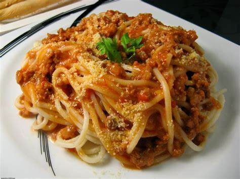
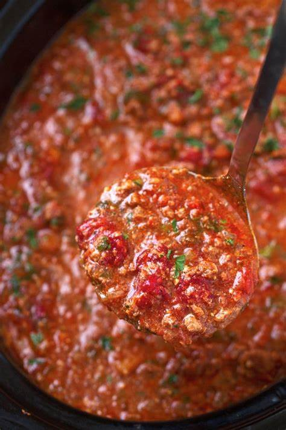

Pasta Bolognese Recipe
Pasta Bolognese is a classic Italian Dish made with ground beef, tomatoes and onions. This was easily one of my
favorite dishes growing up because my grandma made it for me all the time. It is one of the easiest dishes to
make too that taste super good, I'm sure whoever eats this dish will enjoy eating it.
Nutritional + General Info
- 375 calories
- 9 g total fat
- 2.7 g of saturated fat
- 0.3 g of trans fat
- 37 mg of cholesterol
- 54 g of carbohydrates
- 4.7 g of fiber
- 8 g of sugar
- 605 g of sodium
- 21 g of protein
This recipe makes 8 servings, takes 55 minutes to make. 10 minutes of prep time and 45 minutes of cooking. It is
a Entree course.
Chef's Tips before you start.
- Use a pasta that has a tube shape like rigatoni or penne as the meat sauce will be stuck in the pasta
obsorbing all the flavor so every bite is as much flavorful as the first.
- Add the pasta directly into the meat sauce so you know the pasta to sauce ratio to make sure you don't end
up with more sauce than you prefer.
- Save some starch water from when you boiled the pasta to put into the sauce to make the sauce more full of
flavor.
- Use some herbs like mix of fresh basil and flat leaf parsley to finish off the pasta once it is plated to
add that freshness that comes from fresh herbs.
- Finish off the dish with freshly grated parmesan cheese to help thicken the sauce and add more flavor.
- Fresh ingredients are always better than preserved or frozen ones.
- Always let the bolognese sauce simmer for about 30 minutes to make sure the sauce gets that deep and rich
flavor.


Ingredients needed:
- 1 tablespoon of olive oil
- 1 pound of lean ground beef
- 1/2 teaspoon salt
- 1/2 teaspoon pepper
- 1 onion (diced)
- 2 cloves of garlic (minced)
- 1 teaspoon oregano
- 1 teaspoon basil
- 1/2 Red Pepper (crushed)
- 2 15-ounce crushed cans of tomatoes
- 2 tablespoons tomato paste
- 16 ounces of prefered pasta
- 1 teaspoon basil
Subsitutions:
- Fresh Onion - 1 tablespoon onion powder or 1/4 cup instant minced or chopped onion
- Oregano - thyme, basil, or marjoram
- Basil - 1 teaspoon oregano or thyme
- Red Pepper - dash bottled hot pepper sauce or black pepper
- Canned Crushed Tomatoes - 2 1/2 cups chopped, peeled fresh tomatoes, simmered about 10 minutes
- Tomato Paste - 1 cup tomato sauce cooked uncovered to reduced to 1/2 cup
- Basil - 1 teaspoon oregano or thyme
- Ground Beef - Ground turkey or ground chicken
Cooking Equipment Needed
- Knife block+set
- Garlic press
- Cutting Board
- Fry pan
- Saute pan
- Pot for boiling water
- Strainer
- wooden spoons
Cooking Instructions:
- Bring a large pot of salted water to a boil, drop pasta in and cook till al dente or prefered cook time.
Strain and wash with cold water to stop the cooking process. Save a half cup of the pasta water for the
sauce.
- Heat the olive oil in a deep and large saute pan. Add the beef and season with salt and pepper. Cook the
beef till its brown and break it into smaller peices using the back of your wooden spoon until the beef is
cooked through.
- Add onions and garlic and season with oregano, basil, prefered herbs or spices if added, and crushed red
pepper. Saute for abut 5 minutes until all are soft. Add crushed tomatoes, tomato paste, and the pasta water
you saved earlier. Mix well to combine and bring the sauce to a boil. Cover the pot and let it simmer for 30
minutes on low.
- Add the pasta into the bolognese sauce and toss. Plate the dish and top with fresh basil or other herbs of
your prefrance if desired.